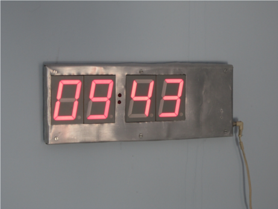
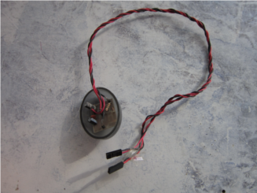

PhD in Astronomy and Astrophysics at Harvard University expected 2014 May
MSc in Mathematics at Université de Rennes 1, France 2009
MSc in Engineering-Physics at Budapest University of Technology, Hungary 2008
My current research involves analyzing large datasets from the Hubble and Kepler space telescopes. I use Python for mining the data, but I rewrite some modules in C in the interest of speed.
For three years, I was the system administrator on more than 40 computers controlling telescopes on five continents. Besides keeping the software in good shape, I was also in charge of acquiring new configurations and spare parts. I frequently traveled to sites for hardware installation and maintenance.
For my master's thesis in mathematics, I performed numerical integrations of ordinary differential equations in C using the GNU Scientific Library, besides theoretical research.
For my master's thesis in physics, I analyzed interference pattern photographs of a laser-illuminated membrane using the Matlab Image Processing Toolbox to measure its deformation.
I have three first-author papers that have been published in the Astrophysical Journal and the Astronomy Journal. I am a co-author on 21 other papers published in peer-reviewed astrophysics and astronomy journals. I also presented four posters at international physics and astrophysics conferences.
In 2001, I designed and built a remote velocity/position sensor device for classroom demonstrations. It consisted of a quartz crystal based sound generator that can be fixed to a pendulum, a car, or other moving object, and a computer with a microphone. I wrote a program that measures the phase of the sound in small time windows, thus calculating the displacement with respect to the previous window, and used numerical differentiation to calculate velocity and acceleration. I used gnuplot to plot the results. I was awarded Accentuated Honorable Mention at the Hungarian National Youth Science and Innovation Competition.
 Around the same time, I designed from scratch and built a digital wall clock based on the Microchip PIC16F627 microcontroller. I drew the PCB design using xfig, printed in on a transparency, photographed with a household UV light on a copper clad board sprayed with photosensitive material, etched it in the bathroom, and drilled the holes and soldered the parts on my desk. The clock is still runing, using a wall DC adapter. When the power goes out, the controller keeps track of the time using a built-in battery, without powering the LEDs. I wrote the control program in Assembly. It supports 12/24 hour formats, and dimming using pulse width modulation.
I have also built two infrared modules based on schematics I found on the Internet: The first one was a receiver that attached to the RS-232 serial port of the computer and was used to control the media player with a regular TV or satellite box remote controller via the software lirc. The second one, pictured here, was a transceiver that attached directly to the IrDA connector of my motherboard, and I used it to transfer photos, ringtones, and backup my contacts on my cell phone.
My Android app MMSKeeper is available from the F-Droid free and open source repository. It allows the user to switch data traffic on and off, while still being able to send and receive multimedia messages (MMS). This is achieved by rewringing the TYPE field of the current Access Point Name, and is useful for users with a limited data plan to prevent background apps from inadvertently generatic data traffic.
I have created two websites. For naya.hu, I used a professional designer's layout, but replaced the Adobe Dreamweaver-generated inner workings with much cleaner, W3C compliant code, and built an engine in PHP. I wrote my personal website entirely from scratch.
You can find some of my recent coding projects under my github account.
In 2006, I welded two used road bike frames together to build a tandem. Professional welders at my university shop showed me how to use their tungsten inert gas welding equipment, but were kind enough to let me do most of the work. The most difficult part was to find a distributor that could provide me with two sticks of filler material, which is usually sold in boxes of many kilograms.
I won first prize four times (2005, 2007, 2008, 2012) at the Rudolf Ortvay International Physics Competiton for University Students.
I won Bronze Medal (82th place, 2001) and Gold Medal (14th place, 2002) at the International Physics Olimpiad.
I won second prize (2004), second prize (2005), and third prize (2006) at the International Mathematics Competition for University Students.
I lectured one section (twenty students) of Math 21a, an undergraduate calculus course at Harvard. I lead problem sessions for Astro 150, a graduate astrophysics course at Harvard; for two undergraduate probability theory courses in Hungary; and for an undergraduate course in automata theory in Finland.
I helped coach a team for the Hong Kong Primary World Mathematics Contest; Hungarian teams for the International Mathematics Competition; and the Finnish and Estonian teams for the International Physics Olimpiad in 2005.
I served on the jury for NYIFFF, a Hungarian national university physics competition.